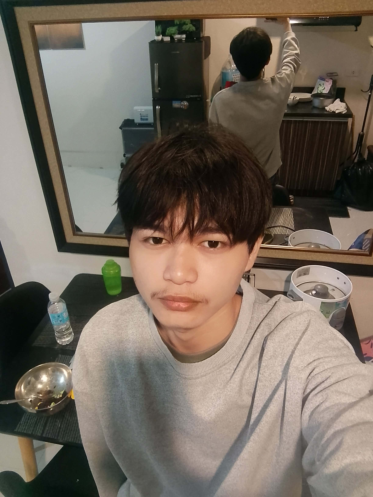
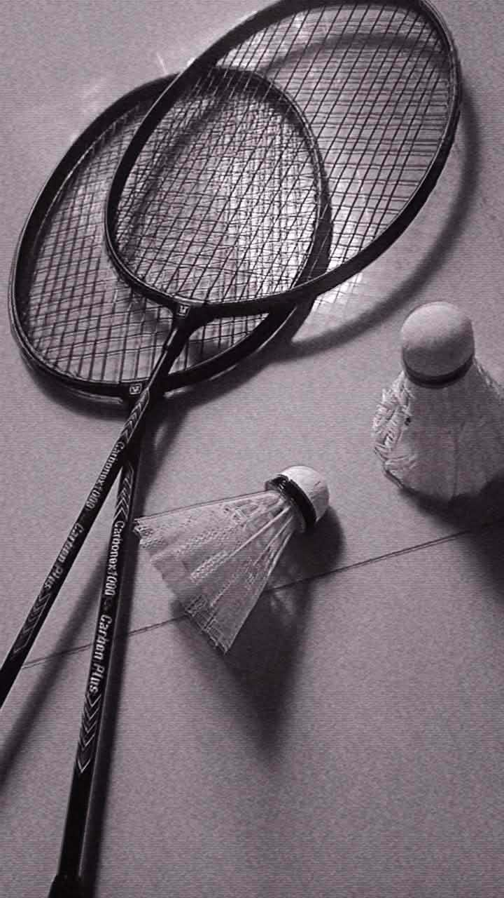

Course: BSIT
Year: 1st Year
School: Cordova Public College
Hobbies: Badminton and Reading
19 . I am a hardworking and determined student who enjoys learning new things, improving my skills, and staying active through the hobbies I love.

You will see the hobbies that inspire and motivate me. Playing badminton keeps me active, builds my discipline, and teaches me to stay determined and never give up. I also love reading because it helps me learn new things, explore different ideas, and grow as a person. These hobbies shape my character and encourage me to always improve myself.
Learn more about Badminton here: Badminton Tips